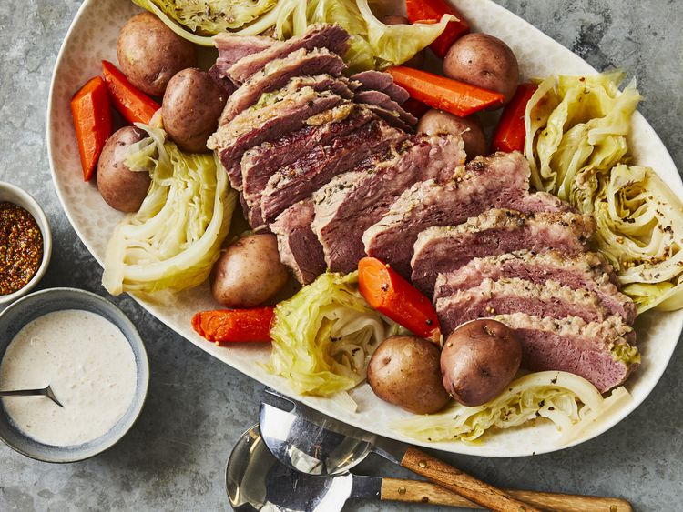

Corned Beef and Cabbage

Cook Time: 2 hrs 30 mins
Total Time: 2 hrs 30 mins
Servings: 6
Description
Over a thousand reviewers loved this paired down classic recipe. The corned beef simmers first, then potatoes, carrots, and cabbage join the pot so the cooking liquid infuses everything.
Ingredients
-
1 (3 pound) corned beef brisket with spice packet
-
10 small red potatoes
-
5 medium carrots
-
1 large head cabbage
Steps
-
Boil the corned beef, then simmer until the meat is tender.
-
Meanwhile, cut potatoes in half, cut the cabbage into wedges, and peel and cut the carrots.
-
Add the potatoes and carrots to the Dutch oven and cook until tender.
-
Add the cabbage and cook for about 15 more minutes.
-
Remove the meat from the Dutch oven, let rest, and slice across the grain.
-
Serve with vegetables and broth.
Home